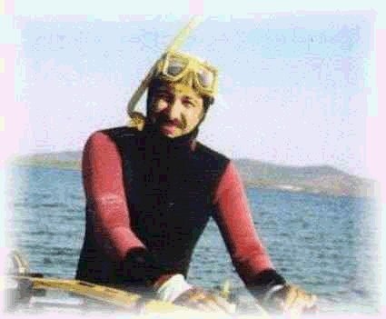

When he first started in 2022 he was saying that his work is "If a bunch of 6 year olds came together and made art"
Now he gets inspired by real life elements and likes to embellish those elements through mostly fictional means AND VICE VERSA (when he gets inspired by fictional elements)
(As of july 2026, he is interested in public space and makes works about buildings he finds interesting)
He mostly makes Films but also works with Animation, Video games and Sound
Keywords so far: Toilets, Fruit, Friendship, History, LIDL, waking up late and feeling lucky about it
One time his theory teacher described the work as "eclectic" and he agrees with that
do you agree?
tell me your opinion at lefterisyourfriend@gmail.com together with other question/comments you might have about my work
